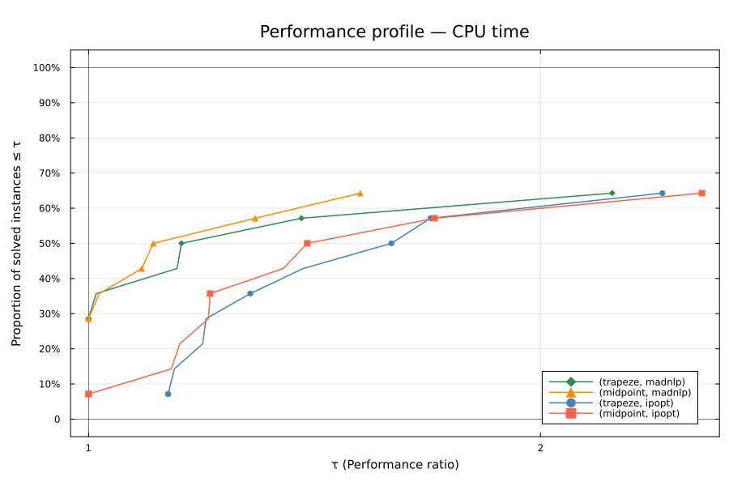

Midpoint vs Trapeze
- The linear solver is MUMPS for all experiments.
- Below you can find Dolan–Moré performance profiles comparing discretization method–solver combinations on the set of optimal control problems. For a detailed explanation of how to read these profiles, see the Performance Profiles page.
Comparison of Discretization Methods
This benchmark evaluates the effect of two discretization methods:
- Midpoint
- Trapeze
combined with two nonlinear solvers:
- Ipopt
- MadNLP
on the ExaModels optimal control modeler.
The comparison is based on four combinations (disc_method, solver):
(trapeze, ipopt)(trapeze, madnlp)(midpoint, ipopt)(midpoint, madnlp)
⚙️ Configuration
Problems: beam, chain, double_oscillator, ducted_fan, electric_vehicle, glider, insurance, jackson, robbins, robot, rocket, space_shuttle, steering, vanderpol
Solvers: ipopt, madnlp
Models: exa
Grid sizes: 200 discretization points
Discretization: trapeze, midpoint method
Tolerance: 1.0e-8
Ipopt strategy: adaptive barrier parameter
Limits: 2000 iterations max, 600.0s wall time
🖥️ Environment
📅 Timestamp : 2026-01-25 20:30:12 UTC
🔧 Julia version : 1.11.8
💻 OS : Linux
🖥️ Machine : runnervmymu0lYou can download the exact environment used for this benchmark:
📦 Project.toml - Package dependencies
📋 Manifest.toml - Complete dependency tree with versions
📜 Benchmark script - Julia script to run the benchmark
These files allow you to reproduce the benchmark environment and results exactly.
Julia Version 1.11.8
Commit cf1da5e20e3 (2025-11-06 17:49 UTC)
Build Info:
Official https://julialang.org/ release
Platform Info:
OS: Linux (x86_64-linux-gnu)
CPU: 4 × Intel(R) Xeon(R) Platinum 8370C CPU @ 2.80GHz
WORD_SIZE: 64
LLVM: libLLVM-16.0.6 (ORCJIT, icelake-server)
Threads: 1 default, 0 interactive, 1 GC (on 4 virtual cores)
Environment:
JULIA_PKG_SERVER_REGISTRY_PREFERENCE = eagerProject CTBenchmarks v0.3.1
Status `~/work/CTBenchmarks.jl/CTBenchmarks.jl/Project.toml`
[6e4b80f9] BenchmarkTools v1.6.3
⌅ [54762871] CTBase v0.16.2
[052768ef] CUDA v5.9.6
[a93c6f00] DataFrames v1.8.1
[ffbed154] DocStringExtensions v0.9.5
[b6b21f68] Ipopt v1.14.0
[682c06a0] JSON v1.4.0
[4076af6c] JuMP v1.29.4
[d72a61cc] MadNLPGPU v0.7.18
[3b83494e] MadNLPMumps v0.5.1
[f4238b75] NLPModelsIpopt v0.11.1
[5f98b655] OptimalControl v1.1.6
[59046045] OptimalControlProblems v0.4.0 `https://github.com/control-toolbox/OptimalControlProblems.jl#194-new-inits-spaceshuttle-steering-robot-insurance`
[91a5bcdd] Plots v1.41.4
[10745b16] Statistics v1.11.1
[bd369af6] Tables v1.12.1
[ade2ca70] Dates v1.11.0
[b77e0a4c] InteractiveUtils v1.11.0
[44cfe95a] Pkg v1.11.0
[de0858da] Printf v1.11.0
[6462fe0b] Sockets v1.11.0
Info Packages marked with ⌅ have new versions available but compatibility constraints restrict them from upgrading. To see why use `status --outdated`Project CTBenchmarks v0.3.1
Status `~/work/CTBenchmarks.jl/CTBenchmarks.jl/Manifest.toml`
[54578032] ADNLPModels v0.8.13
[47edcb42] ADTypes v1.21.0
[14f7f29c] AMD v0.5.3
[621f4979] AbstractFFTs v1.5.0
[79e6a3ab] Adapt v4.4.0
[66dad0bd] AliasTables v1.1.3
[a9b6321e] Atomix v1.1.2
[13072b0f] AxisAlgorithms v1.1.0
[ab4f0b2a] BFloat16s v0.6.1
[6e4b80f9] BenchmarkTools v1.6.3
[d1d4a3ce] BitFlags v0.1.9
[fa961155] CEnum v0.5.0
⌅ [54762871] CTBase v0.16.2
[790bbbee] CTDirect v0.17.4
[1c39547c] CTFlows v0.8.9
⌅ [34c4fa32] CTModels v0.6.9
⌅ [32681960] CTParser v0.7.2
[052768ef] CUDA v5.9.6
[1af6417a] CUDA_Runtime_Discovery v1.0.0
[45b445bb] CUDSS v0.6.6
[d360d2e6] ChainRulesCore v1.26.0
[523fee87] CodecBzip2 v0.8.5
[944b1d66] CodecZlib v0.7.8
[35d6a980] ColorSchemes v3.31.0
[3da002f7] ColorTypes v0.12.1
[c3611d14] ColorVectorSpace v0.11.0
[5ae59095] Colors v0.13.1
[38540f10] CommonSolve v0.2.6
[bbf7d656] CommonSubexpressions v0.3.1
[34da2185] Compat v4.18.1
[f0e56b4a] ConcurrentUtilities v2.5.0
[d38c429a] Contour v0.6.3
[a8cc5b0e] Crayons v4.1.1
[9a962f9c] DataAPI v1.16.0
[a93c6f00] DataFrames v1.8.1
[864edb3b] DataStructures v0.19.3
[e2d170a0] DataValueInterfaces v1.0.0
[8bb1440f] DelimitedFiles v1.9.1
[163ba53b] DiffResults v1.1.0
[b552c78f] DiffRules v1.15.1
[ffbed154] DocStringExtensions v0.9.5
[1037b233] ExaModels v0.9.3
[460bff9d] ExceptionUnwrapping v0.1.11
[e2ba6199] ExprTools v0.1.10
[c87230d0] FFMPEG v0.4.5
[9aa1b823] FastClosures v0.3.2
[1a297f60] FillArrays v1.16.0
[53c48c17] FixedPointNumbers v0.8.5
[1fa38f19] Format v1.3.7
[f6369f11] ForwardDiff v1.3.1
[069b7b12] FunctionWrappers v1.1.3
[0c68f7d7] GPUArrays v11.3.4
[46192b85] GPUArraysCore v0.2.0
[61eb1bfa] GPUCompiler v1.8.1
[096a3bc2] GPUToolbox v1.0.0
[28b8d3ca] GR v0.73.21
[42e2da0e] Grisu v1.0.2
[34c5aeac] HSL v0.5.2
[cd3eb016] HTTP v1.10.19
[076d061b] HashArrayMappedTries v0.2.0
[842dd82b] InlineStrings v1.4.5
[a98d9a8b] Interpolations v0.16.2
[41ab1584] InvertedIndices v1.3.1
[b6b21f68] Ipopt v1.14.0
[92d709cd] IrrationalConstants v0.2.6
[82899510] IteratorInterfaceExtensions v1.0.0
[1019f520] JLFzf v0.1.11
[692b3bcd] JLLWrappers v1.7.1
[682c06a0] JSON v1.4.0
[0f8b85d8] JSON3 v1.14.3
[4076af6c] JuMP v1.29.4
[63c18a36] KernelAbstractions v0.9.39
[40e66cde] LDLFactorizations v0.10.1
[929cbde3] LLVM v9.4.4
[8b046642] LLVMLoopInfo v1.0.0
[b964fa9f] LaTeXStrings v1.4.0
[23fbe1c1] Latexify v0.16.10
[5c8ed15e] LinearOperators v2.11.0
[2ab3a3ac] LogExpFunctions v0.3.29
[e6f89c97] LoggingExtras v1.2.0
[33e6dc65] MKL v0.9.0
[d8e11817] MLStyle v0.4.17
[1914dd2f] MacroTools v0.5.16
[2621e9c9] MadNLP v0.8.12
[d72a61cc] MadNLPGPU v0.7.18
[3b83494e] MadNLPMumps v0.5.1
[b8f27783] MathOptInterface v1.48.0
[739be429] MbedTLS v1.1.9
[442fdcdd] Measures v0.3.3
[2679e427] Metis v1.5.0
[e1d29d7a] Missings v1.2.0
[d8a4904e] MutableArithmetics v1.6.7
[a4795742] NLPModels v0.21.7
[f4238b75] NLPModelsIpopt v0.11.1
[e01155f1] NLPModelsModifiers v0.7.3
[5da4648a] NVTX v1.0.3
[77ba4419] NaNMath v1.1.3
[6fe1bfb0] OffsetArrays v1.17.0
[4d8831e6] OpenSSL v1.6.1
[5f98b655] OptimalControl v1.1.6
[59046045] OptimalControlProblems v0.4.0 `https://github.com/control-toolbox/OptimalControlProblems.jl#194-new-inits-spaceshuttle-steering-robot-insurance`
[bac558e1] OrderedCollections v1.8.1
[d96e819e] Parameters v0.12.3
[69de0a69] Parsers v2.8.3
[ccf2f8ad] PlotThemes v3.3.0
[995b91a9] PlotUtils v1.4.4
[91a5bcdd] Plots v1.41.4
[2dfb63ee] PooledArrays v1.4.3
⌅ [aea7be01] PrecompileTools v1.2.1
[21216c6a] Preferences v1.5.1
[08abe8d2] PrettyTables v3.1.2
[43287f4e] PtrArrays v1.3.0
[be4d8f0f] Quadmath v0.5.13
[74087812] Random123 v1.7.1
[e6cf234a] RandomNumbers v1.6.0
[c84ed2f1] Ratios v0.4.5
[3cdcf5f2] RecipesBase v1.3.4
[01d81517] RecipesPipeline v0.6.12
[189a3867] Reexport v1.2.2
[05181044] RelocatableFolders v1.0.1
[ae029012] Requires v1.3.1
[37e2e3b7] ReverseDiff v1.16.2
[7e506255] ScopedValues v1.5.0
[6c6a2e73] Scratch v1.3.0
[91c51154] SentinelArrays v1.4.9
[992d4aef] Showoff v1.0.3
[777ac1f9] SimpleBufferStream v1.2.0
[ff4d7338] SolverCore v0.3.9
[a2af1166] SortingAlgorithms v1.2.2
[9f842d2f] SparseConnectivityTracer v1.1.3
[0a514795] SparseMatrixColorings v0.4.23
[276daf66] SpecialFunctions v2.6.1
[860ef19b] StableRNGs v1.0.4
[90137ffa] StaticArrays v1.9.16
[1e83bf80] StaticArraysCore v1.4.4
[10745b16] Statistics v1.11.1
[82ae8749] StatsAPI v1.8.0
[2913bbd2] StatsBase v0.34.10
[892a3eda] StringManipulation v0.4.2
[856f2bd8] StructTypes v1.11.0
[ec057cc2] StructUtils v2.6.2
[3783bdb8] TableTraits v1.0.1
[bd369af6] Tables v1.12.1
[62fd8b95] TensorCore v0.1.1
[a759f4b9] TimerOutputs v0.5.29
[e689c965] Tracy v0.1.6
[3bb67fe8] TranscodingStreams v0.11.3
[5c2747f8] URIs v1.6.1
[3a884ed6] UnPack v1.0.2
[1cfade01] UnicodeFun v0.4.1
[013be700] UnsafeAtomics v0.3.0
[41fe7b60] Unzip v0.2.0
[efce3f68] WoodburyMatrices v1.1.0
[ae81ac8f] ASL_jll v0.1.3+0
[6e34b625] Bzip2_jll v1.0.9+0
[d1e2174e] CUDA_Compiler_jll v0.4.1+1
[4ee394cb] CUDA_Driver_jll v13.1.0+2
⌅ [76a88914] CUDA_Runtime_jll v0.19.2+0
[4889d778] CUDSS_jll v0.7.1+0
[83423d85] Cairo_jll v1.18.5+0
[ee1fde0b] Dbus_jll v1.16.2+0
[2702e6a9] EpollShim_jll v0.0.20230411+1
[2e619515] Expat_jll v2.7.3+0
[b22a6f82] FFMPEG_jll v8.0.1+0
[a3f928ae] Fontconfig_jll v2.17.1+0
[d7e528f0] FreeType2_jll v2.13.4+0
[559328eb] FriBidi_jll v1.0.17+0
[0656b61e] GLFW_jll v3.4.1+0
[d2c73de3] GR_jll v0.73.21+0
[b0724c58] GettextRuntime_jll v0.22.4+0
[61579ee1] Ghostscript_jll v9.55.1+0
[7746bdde] Glib_jll v2.86.2+0
[3b182d85] Graphite2_jll v1.3.15+0
[017b0a0e] HSL_jll v4.0.4+0
[2e76f6c2] HarfBuzz_jll v8.5.1+0
[e33a78d0] Hwloc_jll v2.12.2+0
[1d5cc7b8] IntelOpenMP_jll v2025.2.0+0
[9cc047cb] Ipopt_jll v300.1400.1901+0
[aacddb02] JpegTurbo_jll v3.1.4+0
[9c1d0b0a] JuliaNVTXCallbacks_jll v0.2.1+0
[c1c5ebd0] LAME_jll v3.100.3+0
[88015f11] LERC_jll v4.0.1+0
[dad2f222] LLVMExtra_jll v0.0.38+0
[1d63c593] LLVMOpenMP_jll v18.1.8+0
[dd4b983a] LZO_jll v2.10.3+0
[ad6e5548] LibTracyClient_jll v0.13.1+0
⌅ [e9f186c6] Libffi_jll v3.4.7+0
[7e76a0d4] Libglvnd_jll v1.7.1+1
[94ce4f54] Libiconv_jll v1.18.0+0
[4b2f31a3] Libmount_jll v2.41.2+0
[89763e89] Libtiff_jll v4.7.2+0
[38a345b3] Libuuid_jll v2.41.2+0
[d00139f3] METIS_jll v5.1.3+0
[856f044c] MKL_jll v2025.2.0+0
[d7ed1dd3] MUMPS_seq_jll v500.800.200+0
[e98f9f5b] NVTX_jll v3.2.2+0
[e7412a2a] Ogg_jll v1.3.6+0
[656ef2d0] OpenBLAS32_jll v0.3.30+0
[458c3c95] OpenSSL_jll v3.5.4+0
[efe28fd5] OpenSpecFun_jll v0.5.6+0
[91d4177d] Opus_jll v1.6.0+0
[36c8627f] Pango_jll v1.57.0+0
⌅ [30392449] Pixman_jll v0.44.2+0
[c0090381] Qt6Base_jll v6.8.2+2
[629bc702] Qt6Declarative_jll v6.8.2+1
[ce943373] Qt6ShaderTools_jll v6.8.2+1
[e99dba38] Qt6Wayland_jll v6.8.2+2
[319450e9] SPRAL_jll v2025.9.18+0
[a44049a8] Vulkan_Loader_jll v1.3.243+0
[a2964d1f] Wayland_jll v1.24.0+0
⌅ [02c8fc9c] XML2_jll v2.13.9+0
[ffd25f8a] XZ_jll v5.8.2+0
[f67eecfb] Xorg_libICE_jll v1.1.2+0
[c834827a] Xorg_libSM_jll v1.2.6+0
[4f6342f7] Xorg_libX11_jll v1.8.12+0
[0c0b7dd1] Xorg_libXau_jll v1.0.13+0
[935fb764] Xorg_libXcursor_jll v1.2.4+0
[a3789734] Xorg_libXdmcp_jll v1.1.6+0
[1082639a] Xorg_libXext_jll v1.3.7+0
[d091e8ba] Xorg_libXfixes_jll v6.0.2+0
[a51aa0fd] Xorg_libXi_jll v1.8.3+0
[d1454406] Xorg_libXinerama_jll v1.1.6+0
[ec84b674] Xorg_libXrandr_jll v1.5.5+0
[ea2f1a96] Xorg_libXrender_jll v0.9.12+0
[a65dc6b1] Xorg_libpciaccess_jll v0.18.1+0
[c7cfdc94] Xorg_libxcb_jll v1.17.1+0
[cc61e674] Xorg_libxkbfile_jll v1.1.3+0
[e920d4aa] Xorg_xcb_util_cursor_jll v0.1.6+0
[12413925] Xorg_xcb_util_image_jll v0.4.1+0
[2def613f] Xorg_xcb_util_jll v0.4.1+0
[975044d2] Xorg_xcb_util_keysyms_jll v0.4.1+0
[0d47668e] Xorg_xcb_util_renderutil_jll v0.3.10+0
[c22f9ab0] Xorg_xcb_util_wm_jll v0.4.2+0
[35661453] Xorg_xkbcomp_jll v1.4.7+0
[33bec58e] Xorg_xkeyboard_config_jll v2.44.0+0
[c5fb5394] Xorg_xtrans_jll v1.6.0+0
[3161d3a3] Zstd_jll v1.5.7+1
[1e29f10c] demumble_jll v1.3.0+0
[35ca27e7] eudev_jll v3.2.14+0
[214eeab7] fzf_jll v0.61.1+0
[a4ae2306] libaom_jll v3.13.1+0
[0ac62f75] libass_jll v0.17.4+0
[1183f4f0] libdecor_jll v0.2.2+0
[2db6ffa8] libevdev_jll v1.13.4+0
[f638f0a6] libfdk_aac_jll v2.0.4+0
[36db933b] libinput_jll v1.28.1+0
[b53b4c65] libpng_jll v1.6.54+0
[f27f6e37] libvorbis_jll v1.3.8+0
[009596ad] mtdev_jll v1.1.7+0
[1317d2d5] oneTBB_jll v2022.0.0+1
⌅ [1270edf5] x264_jll v10164.0.1+0
[dfaa095f] x265_jll v4.1.0+0
[d8fb68d0] xkbcommon_jll v1.13.0+0
[0dad84c5] ArgTools v1.1.2
[56f22d72] Artifacts v1.11.0
[2a0f44e3] Base64 v1.11.0
[ade2ca70] Dates v1.11.0
[8ba89e20] Distributed v1.11.0
[f43a241f] Downloads v1.6.0
[7b1f6079] FileWatching v1.11.0
[9fa8497b] Future v1.11.0
[b77e0a4c] InteractiveUtils v1.11.0
[4af54fe1] LazyArtifacts v1.11.0
[b27032c2] LibCURL v0.6.4
[76f85450] LibGit2 v1.11.0
[8f399da3] Libdl v1.11.0
[37e2e46d] LinearAlgebra v1.11.0
[56ddb016] Logging v1.11.0
[d6f4376e] Markdown v1.11.0
[a63ad114] Mmap v1.11.0
[ca575930] NetworkOptions v1.2.0
[44cfe95a] Pkg v1.11.0
[de0858da] Printf v1.11.0
[9abbd945] Profile v1.11.0
[3fa0cd96] REPL v1.11.0
[9a3f8284] Random v1.11.0
[ea8e919c] SHA v0.7.0
[9e88b42a] Serialization v1.11.0
[1a1011a3] SharedArrays v1.11.0
[6462fe0b] Sockets v1.11.0
[2f01184e] SparseArrays v1.11.0
[f489334b] StyledStrings v1.11.0
[4607b0f0] SuiteSparse
[fa267f1f] TOML v1.0.3
[a4e569a6] Tar v1.10.0
[8dfed614] Test v1.11.0
[cf7118a7] UUIDs v1.11.0
[4ec0a83e] Unicode v1.11.0
[e66e0078] CompilerSupportLibraries_jll v1.1.1+0
[deac9b47] LibCURL_jll v8.6.0+0
[e37daf67] LibGit2_jll v1.7.2+0
[29816b5a] LibSSH2_jll v1.11.0+1
[c8ffd9c3] MbedTLS_jll v2.28.6+0
[14a3606d] MozillaCACerts_jll v2023.12.12
[4536629a] OpenBLAS_jll v0.3.27+1
[05823500] OpenLibm_jll v0.8.5+0
[efcefdf7] PCRE2_jll v10.42.0+1
[bea87d4a] SuiteSparse_jll v7.7.0+0
[83775a58] Zlib_jll v1.2.13+1
[8e850b90] libblastrampoline_jll v5.11.0+0
[8e850ede] nghttp2_jll v1.59.0+0
[3f19e933] p7zip_jll v17.4.0+2
Info Packages marked with ⌅ have new versions available but compatibility constraints restrict them from upgrading. To see why use `status --outdated -m`📈 Performance Profile: CPU Time
Dataset overview for core-midpoint-trapeze:
- Problems: 14 unique optimal control problems
- Instances: 14
- Solver combos: 4
Profile configuration:
- Instance definition: (problem, grid_size)
- Solver combos definition: (disc_method, solver)
- Criterion: CPU time
- Successful runs: 36/56 (64.3%)
- Successful instances: 9/14 (64.3%)
- Unsuccessful instances (no solver converged):
ducted_fan, 200insurance, 200robot, 200space_shuttle, 200steering, 200
Robustness (% of instances solved):
(trapeze, madnlp): 64.3%(midpoint, madnlp): 64.3%(trapeze, ipopt): 64.3%(midpoint, ipopt): 64.3%
Efficiency (% of instances where fastest):
(trapeze, madnlp): 28.6%(midpoint, madnlp): 28.6%(trapeze, ipopt): 0.0%(midpoint, ipopt): 7.1%
Most robust: 4 combinations tied at 64.3%.
Most efficient: 2 combinations tied at 28.6%.
📊 Result Tables
| Success | N | Model | Solver | Time (ms) | Iters | Objective | Criterion | Best |
|---|---|---|---|---|---|---|---|---|
| ✓ | 200 | exa | ipopt | 15.337 | 16 | 8.891335 | min | |
| ✓ | 200 | exa | ipopt | 13.766 | 15 | 8.889505 | min | |
| ✓ | 200 | exa | madnlp | 11.968 | 21 | 8.891335 | min | ✓ |
| ✓ | 200 | exa | madnlp | 13.217 | 22 | 8.889505 | min |
Benchmarks results:
┌─ Problem: beam
│
├──┬ Solver: madnlp, Discretization: trapeze
│ │
│ │ N = 200
│ │ ✓ | exa | time: 11.968 ms | iters: 21 | obj: 8.891335e+00 (min) | CPU: 2.07 MiB
│ └─
│
├──┬ Solver: madnlp, Discretization: midpoint
│ │
│ │ N = 200
│ │ ✓ | exa | time: 13.217 ms | iters: 22 | obj: 8.889505e+00 (min) | CPU: 2.06 MiB
│ └─
│
├──┬ Solver: ipopt, Discretization: trapeze
│ │
│ │ N = 200
│ │ ✓ | exa | time: 15.337 ms | iters: 16 | obj: 8.891335e+00 (min) | CPU: 72.48 KiB
│ └─
│
├──┬ Solver: ipopt, Discretization: midpoint
│ │
│ │ N = 200
│ │ ✓ | exa | time: 13.766 ms | iters: 15 | obj: 8.889505e+00 (min) | CPU: 70.33 KiB
│ └─
└─
┌─ Problem: chain
│
├──┬ Solver: madnlp, Discretization: trapeze
│ │
│ │ N = 200
│ │ ✓ | exa | time: 7.998 ms | iters: 7 | obj: 5.068917e+00 (min) | CPU: 1.75 MiB
│ └─
│
├──┬ Solver: madnlp, Discretization: midpoint
│ │
│ │ N = 200
│ │ ✓ | exa | time: 12.135 ms | iters: 12 | obj: 5.068486e+00 (min) | CPU: 1.68 MiB
│ └─
│
├──┬ Solver: ipopt, Discretization: trapeze
│ │
│ │ N = 200
│ │ ✓ | exa | time: 9.578 ms | iters: 7 | obj: 5.068917e+00 (min) | CPU: 70.06 KiB
│ └─
│
├──┬ Solver: ipopt, Discretization: midpoint
│ │
│ │ N = 200
│ │ ✓ | exa | time: 13.598 ms | iters: 12 | obj: 5.068486e+00 (min) | CPU: 72.88 KiB
│ └─
└─
┌─ Problem: double_oscillator
│
├──┬ Solver: madnlp, Discretization: trapeze
│ │
│ │ N = 200
│ │ ✓ | exa | time: 8.692 ms | iters: 5 | obj: 9.103362e-04 (min) | CPU: 3.03 MiB
│ └─
│
├──┬ Solver: madnlp, Discretization: midpoint
│ │
│ │ N = 200
│ │ ✓ | exa | time: 7.537 ms | iters: 5 | obj: 9.101904e-04 (min) | CPU: 2.43 MiB
│ └─
│
├──┬ Solver: ipopt, Discretization: trapeze
│ │
│ │ N = 200
│ │ ✓ | exa | time: 11.993 ms | iters: 5 | obj: 9.103362e-04 (min) | CPU: 102.80 KiB
│ └─
│
├──┬ Solver: ipopt, Discretization: midpoint
│ │
│ │ N = 200
│ │ ✓ | exa | time: 10.164 ms | iters: 5 | obj: 9.101904e-04 (min) | CPU: 100.17 KiB
│ └─
└─
┌─ Problem: ducted_fan
│
├──┬ Solver: madnlp, Discretization: trapeze
│ │
│ │ N = 200
│ │ ✗ | exa : ERROR: UndefVarError(:ducted_fan_s, CTBenchmarks)
│ └─
│
├──┬ Solver: madnlp, Discretization: midpoint
│ │
│ │ N = 200
│ │ ✗ | exa : ERROR: UndefVarError(:ducted_fan_s, CTBenchmarks)
│ └─
│
├──┬ Solver: ipopt, Discretization: trapeze
│ │
│ │ N = 200
│ │ ✗ | exa : ERROR: UndefVarError(:ducted_fan_s, CTBenchmarks)
│ └─
│
├──┬ Solver: ipopt, Discretization: midpoint
│ │
│ │ N = 200
│ │ ✗ | exa : ERROR: UndefVarError(:ducted_fan_s, CTBenchmarks)
│ └─
└─
┌─ Problem: electric_vehicle
│
├──┬ Solver: madnlp, Discretization: trapeze
│ │
│ │ N = 200
│ │ ✓ | exa | time: 3.743 ms | iters: 4 | obj: 1.228699e+03 (min) | CPU: 1.65 MiB
│ └─
│
├──┬ Solver: madnlp, Discretization: midpoint
│ │
│ │ N = 200
│ │ ✓ | exa | time: 4.062 ms | iters: 4 | obj: 1.228639e+03 (min) | CPU: 1.35 MiB
│ └─
│
├──┬ Solver: ipopt, Discretization: trapeze
│ │
│ │ N = 200
│ │ ✓ | exa | time: 4.459 ms | iters: 4 | obj: 1.228699e+03 (min) | CPU: 58.31 KiB
│ └─
│
├──┬ Solver: ipopt, Discretization: midpoint
│ │
│ │ N = 200
│ │ ✓ | exa | time: 4.250 ms | iters: 4 | obj: 1.228639e+03 (min) | CPU: 54.47 KiB
│ └─
└─
┌─ Problem: glider
│
├──┬ Solver: madnlp, Discretization: trapeze
│ │
│ │ N = 200
│ │ ✓ | exa | time: 602.450 ms | iters: 183 | obj: -1.248809e+03 (min) | CPU: 21.09 MiB
│ └─
│
├──┬ Solver: madnlp, Discretization: midpoint
│ │
│ │ N = 200
│ │ ✓ | exa | time: 269.870 ms | iters: 97 | obj: -1.247918e+03 (min) | CPU: 13.19 MiB
│ └─
│
├──┬ Solver: ipopt, Discretization: trapeze
│ │
│ │ N = 200
│ │ ✓ | exa | time: 455.979 ms | iters: 113 | obj: -1.248896e+03 (min) | CPU: 305.36 KiB
│ └─
│
├──┬ Solver: ipopt, Discretization: midpoint
│ │
│ │ N = 200
│ │ ✓ | exa | time: 377.464 ms | iters: 103 | obj: -1.247918e+03 (min) | CPU: 286.11 KiB
│ └─
└─
┌─ Problem: insurance
│
├──┬ Solver: madnlp, Discretization: trapeze
│ │
│ │ N = 200
│ │ ✗ | exa : ERROR: UndefVarError(:insurance_s, CTBenchmarks)
│ └─
│
├──┬ Solver: madnlp, Discretization: midpoint
│ │
│ │ N = 200
│ │ ✗ | exa : ERROR: UndefVarError(:insurance_s, CTBenchmarks)
│ └─
│
├──┬ Solver: ipopt, Discretization: trapeze
│ │
│ │ N = 200
│ │ ✗ | exa : ERROR: UndefVarError(:insurance_s, CTBenchmarks)
│ └─
│
├──┬ Solver: ipopt, Discretization: midpoint
│ │
│ │ N = 200
│ │ ✗ | exa : ERROR: UndefVarError(:insurance_s, CTBenchmarks)
│ └─
└─
┌─ Problem: jackson
│
├──┬ Solver: madnlp, Discretization: trapeze
│ │
│ │ N = 200
│ │ ✓ | exa | time: 51.348 ms | iters: 40 | obj: -1.918610e-01 (min) | CPU: 7.05 MiB
│ └─
│
├──┬ Solver: madnlp, Discretization: midpoint
│ │
│ │ N = 200
│ │ ✓ | exa | time: 37.047 ms | iters: 33 | obj: -1.918402e-01 (min) | CPU: 5.86 MiB
│ └─
│
├──┬ Solver: ipopt, Discretization: trapeze
│ │
│ │ N = 200
│ │ ✓ | exa | time: 89.332 ms | iters: 42 | obj: -1.918613e-01 (min) | CPU: 124.30 KiB
│ └─
│
├──┬ Solver: ipopt, Discretization: midpoint
│ │
│ │ N = 200
│ │ ✓ | exa | time: 94.921 ms | iters: 48 | obj: -1.918405e-01 (min) | CPU: 126.88 KiB
│ └─
└─
┌─ Problem: robbins
│
├──┬ Solver: madnlp, Discretization: trapeze
│ │
│ │ N = 200
│ │ ✓ | exa | time: 26.009 ms | iters: 34 | obj: 1.962626e+01 (min) | CPU: 2.95 MiB
│ └─
│
├──┬ Solver: madnlp, Discretization: midpoint
│ │
│ │ N = 200
│ │ ✓ | exa | time: 23.089 ms | iters: 19 | obj: 1.945946e+01 (min) | CPU: 2.24 MiB
│ └─
│
├──┬ Solver: ipopt, Discretization: trapeze
│ │
│ │ N = 200
│ │ ✓ | exa | time: 25.657 ms | iters: 19 | obj: 1.962626e+01 (min) | CPU: 95.55 KiB
│ └─
│
├──┬ Solver: ipopt, Discretization: midpoint
│ │
│ │ N = 200
│ │ ✓ | exa | time: 22.708 ms | iters: 19 | obj: 1.945946e+01 (min) | CPU: 94.23 KiB
│ └─
└─
┌─ Problem: robot
│
├──┬ Solver: madnlp, Discretization: trapeze
│ │
│ │ N = 200
│ │ ✗ | exa : ERROR: UndefVarError(:robot_s, CTBenchmarks)
│ └─
│
├──┬ Solver: madnlp, Discretization: midpoint
│ │
│ │ N = 200
│ │ ✗ | exa : ERROR: UndefVarError(:robot_s, CTBenchmarks)
│ └─
│
├──┬ Solver: ipopt, Discretization: trapeze
│ │
│ │ N = 200
│ │ ✗ | exa : ERROR: UndefVarError(:robot_s, CTBenchmarks)
│ └─
│
├──┬ Solver: ipopt, Discretization: midpoint
│ │
│ │ N = 200
│ │ ✗ | exa : ERROR: UndefVarError(:robot_s, CTBenchmarks)
│ └─
└─
┌─ Problem: rocket
│
├──┬ Solver: madnlp, Discretization: trapeze
│ │
│ │ N = 200
│ │ ✓ | exa | time: 23.092 ms | iters: 21 | obj: -1.012835e+00 (min) | CPU: 4.72 MiB
│ └─
│
├──┬ Solver: madnlp, Discretization: midpoint
│ │
│ │ N = 200
│ │ ✓ | exa | time: 22.824 ms | iters: 22 | obj: -1.012837e+00 (min) | CPU: 4.59 MiB
│ └─
│
├──┬ Solver: ipopt, Discretization: trapeze
│ │
│ │ N = 200
│ │ ✓ | exa | time: 31.732 ms | iters: 18 | obj: -1.012836e+00 (min) | CPU: 100.95 KiB
│ └─
│
├──┬ Solver: ipopt, Discretization: midpoint
│ │
│ │ N = 200
│ │ ✓ | exa | time: 27.433 ms | iters: 17 | obj: -1.012838e+00 (min) | CPU: 98.80 KiB
│ └─
└─
┌─ Problem: space_shuttle
│
├──┬ Solver: madnlp, Discretization: trapeze
│ │
│ │ N = 200
│ │ ✗ | exa : ERROR: UndefVarError(:space_shuttle_s, CTBenchmarks)
│ └─
│
├──┬ Solver: madnlp, Discretization: midpoint
│ │
│ │ N = 200
│ │ ✗ | exa : ERROR: UndefVarError(:space_shuttle_s, CTBenchmarks)
│ └─
│
├──┬ Solver: ipopt, Discretization: trapeze
│ │
│ │ N = 200
│ │ ✗ | exa : ERROR: UndefVarError(:space_shuttle_s, CTBenchmarks)
│ └─
│
├──┬ Solver: ipopt, Discretization: midpoint
│ │
│ │ N = 200
│ │ ✗ | exa : ERROR: UndefVarError(:space_shuttle_s, CTBenchmarks)
│ └─
└─
┌─ Problem: steering
│
├──┬ Solver: madnlp, Discretization: trapeze
│ │
│ │ N = 200
│ │ ✗ | exa : ERROR: UndefVarError(:steering_s, CTBenchmarks)
│ └─
│
├──┬ Solver: madnlp, Discretization: midpoint
│ │
│ │ N = 200
│ │ ✗ | exa : ERROR: UndefVarError(:steering_s, CTBenchmarks)
│ └─
│
├──┬ Solver: ipopt, Discretization: trapeze
│ │
│ │ N = 200
│ │ ✗ | exa : ERROR: UndefVarError(:steering_s, CTBenchmarks)
│ └─
│
├──┬ Solver: ipopt, Discretization: midpoint
│ │
│ │ N = 200
│ │ ✗ | exa : ERROR: UndefVarError(:steering_s, CTBenchmarks)
│ └─
└─
┌─ Problem: vanderpol
│
├──┬ Solver: madnlp, Discretization: trapeze
│ │
│ │ N = 200
│ │ ✓ | exa | time: 3.104 ms | iters: 3 | obj: 1.047836e+00 (min) | CPU: 1.65 MiB
│ └─
│
├──┬ Solver: madnlp, Discretization: midpoint
│ │
│ │ N = 200
│ │ ✓ | exa | time: 4.007 ms | iters: 3 | obj: 1.047802e+00 (min) | CPU: 1.41 MiB
│ └─
│
├──┬ Solver: ipopt, Discretization: trapeze
│ │
│ │ N = 200
│ │ ✓ | exa | time: 3.540 ms | iters: 3 | obj: 1.047836e+00 (min) | CPU: 53.44 KiB
│ └─
│
├──┬ Solver: ipopt, Discretization: midpoint
│ │
│ │ N = 200
│ │ ✓ | exa | time: 3.740 ms | iters: 3 | obj: 1.047802e+00 (min) | CPU: 52.12 KiB
│ └─
└─